母版定位 · 旧待机第1姿
沿用旧稿的人物身份、发型、棕黑金长衣和空手待机。alpha≥128的主体未触及画布四边；不新增发光或脚下影子。第2姿的脚位和轮廓不同，不能直接宣布待机循环通过。
三者共用世界尺度和根坐标；拟合是量化还原，不是原图无损。母版头、躯干和腿链已作人工坐标登记，尚需复核。轮廓规则不会沿每个矩形画边。
行走边距修复；轻攻一独立七姿回收候选，未验收。
旧母版残留外部晕染，已纠正记录。9姿拟合候选、行走失败稿及轻攻一复用六姿未验收。
母版、已有内容、后续制作检查点。历史库存检查；制作已恢复；已有候选不等于完整动作已交付。
沿用旧稿的人物身份、发型、棕黑金长衣和空手待机。alpha≥128的主体未触及画布四边；不新增发光或脚下影子。第2姿的脚位和轮廓不同，不能直接宣布待机循环通过。
三者共用世界尺度和根坐标；拟合是量化还原，不是原图无损。母版头、躯干和腿链已作人工坐标登记，尚需复核。轮廓规则不会沿每个矩形画边。
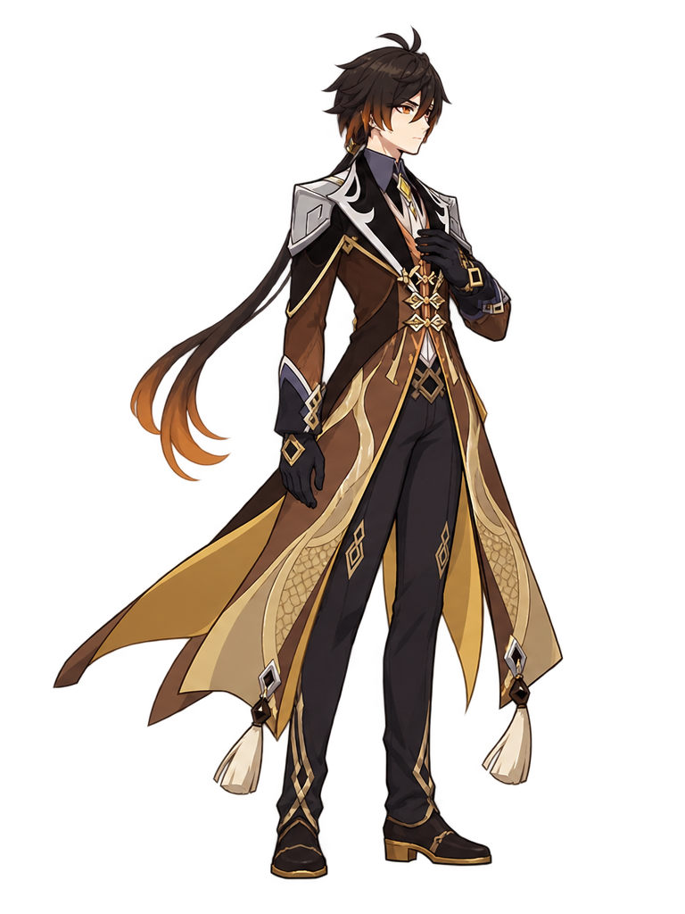
需把脚底固定到母版根，检查头长、颈到骨盆、髋膝踝链；若各段倍率冲突，应修源姿势，不能靠每帧等高或折中缩放掩盖。
历史包中找到10组连续身体候选，其他动作有部分旧单姿或缺连续源图。岩脊与头像另计。刚生成的候选保留为工作材料，但背景粘连、裁切和持械仍有未通过项，不登记成完成。
| 动作 | 历史覆盖 | 处理 | 证据／原因 |
|---|---|---|---|
| 待机 | 已有连续候选 · 2姿 | 复用视觉基准；待机循环需修脚位/比例 | 主体完整，右手近胸、左手垂下；第二姿脚位和轮廓不同 |
| 前走 | 已有连续候选 · 6姿 | 保留，修边缘/步态/尺度后复用 | 第1姿右鞋触及格子右边缘；腿链与躯干需单独核对 |
| 后退 | 缺连续源图 · 0姿 | 补缺；不使用普通步态代替该动作 | 历史交接包未找到该动作的连续源图 |
| 跳跃 | 仅有旧单姿 · 1姿 | 补连续动作；优先利用旧单姿 | 旧roster仅有 jump 单姿，不能算完整动作 |
| 前冲 | 缺连续源图 · 0姿 | 补缺；不使用普通步态代替该动作 | 历史交接包未找到该动作的连续源图 |
| 后撤 | 缺连续源图 · 0姿 | 补缺；不使用普通步态代替该动作 | 历史交接包未找到该动作的连续源图 |
| 蹲下 | 仅有旧单姿 · 1姿 | 补连续动作；优先利用旧单姿 | 旧roster仅有 crouch 单姿，不能算完整动作 |
| 站立格挡 | 仅有旧单姿 · 1姿 | 补连续动作；优先利用旧单姿 | 旧roster仅有 guard 单姿，不能算完整动作 |
| 蹲防 | 仅有旧单姿 · 1姿 | 补连续动作；优先利用旧单姿 | 旧roster仅有 crouchGuard 单姿，不能算完整动作 |
| 轻攻一 | 已有连续候选 · 4姿 | 保留身体关键姿势，返修一体持械 | 旧稿部分空手或仅枪杆；完整持枪、枪长与攻击路线待修 |
| 轻攻二 | 已有连续候选 · 4姿 | 保留身体关键姿势，返修一体持械 | 旧稿部分空手或仅枪杆；完整持枪、枪长与攻击路线待修 |
| 轻攻三 | 已有连续候选 · 4姿 | 保留身体关键姿势，返修一体持械 | 旧稿部分空手或仅枪杆；完整持枪、枪长与攻击路线待修 |
| 站重 | 已有连续候选 · 4姿 | 保留身体关键姿势，返修一体持械 | 旧稿部分空手或仅枪杆；完整持枪、枪长与攻击路线待修 |
| 蹲轻 | 已有连续候选 · 4姿 | 保留身体关键姿势，返修一体持械 | 旧稿部分空手或仅枪杆；完整持枪、枪长与攻击路线待修 |
| 蹲重 | 已有连续候选 · 4姿 | 保留身体关键姿势，返修一体持械 | 旧稿部分空手或仅枪杆；完整持枪、枪长与攻击路线待修 |
| 空轻 | 已有连续候选 · 4姿 | 保留身体关键姿势，返修一体持械 | 旧稿部分空手或仅枪杆；完整持枪、枪长与攻击路线待修 |
| 空重 | 缺连续源图 · 0姿 | 补缺；不使用普通步态代替该动作 | 历史交接包未找到该动作的连续源图 |
| E · 地心 | 已有连续候选 · 4姿 | 保留空手施术，重新对齐岩脊释放 | 有四姿与独立岩脊；需确认掌势和释放tick |
| Q · 天星 | 仅有旧单姿 · 2姿 | 补连续动作；优先利用旧单姿 | 旧roster仅有 qCharge,qRelease 单姿，不能算完整动作 |
| 投技 | 缺连续源图 · 0姿 | 补缺；不使用普通步态代替该动作 | 历史交接包未找到该动作的连续源图 |
| 被投 | 缺连续源图 · 0姿 | 补缺；不使用普通步态代替该动作 | 历史交接包未找到该动作的连续源图 |
| 受击与倒地 | 仅有旧单姿 · 3姿 | 补连续动作；优先利用旧单姿 | 旧roster仅有 hurt,airHurt,down 单姿，不能算完整动作 |
| 起身 | 仅有旧单姿 · 1姿 | 补连续动作；优先利用旧单姿 | 旧roster仅有 getup 单姿，不能算完整动作 |
| 胜利 | 缺连续源图 · 0姿 | 补缺；不使用普通步态代替该动作 | 历史交接包未找到该动作的连续源图 |
| 败北 | 缺连续源图 · 0姿 | 补缺；不使用普通步态代替该动作 | 历史交接包未找到该动作的连续源图 |
主体完整，右手近胸、左手垂下；第二姿脚位和轮廓不同
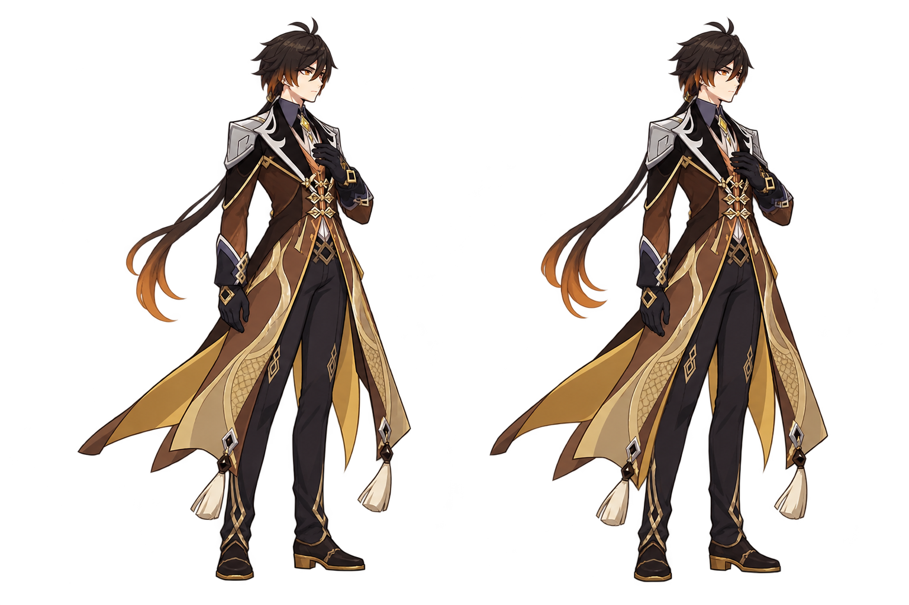
第1姿右鞋触及格子右边缘；腿链与躯干需单独核对
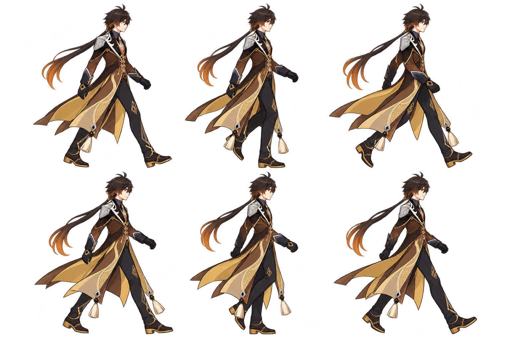
旧稿部分空手或仅枪杆；完整持枪、枪长与攻击路线待修
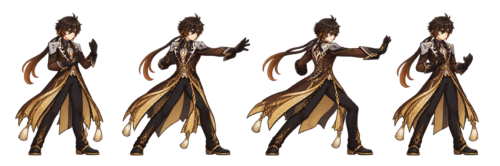
旧稿部分空手或仅枪杆；完整持枪、枪长与攻击路线待修
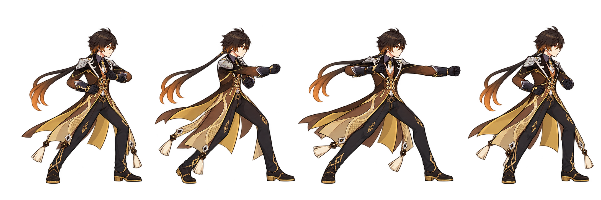
旧稿部分空手或仅枪杆；完整持枪、枪长与攻击路线待修
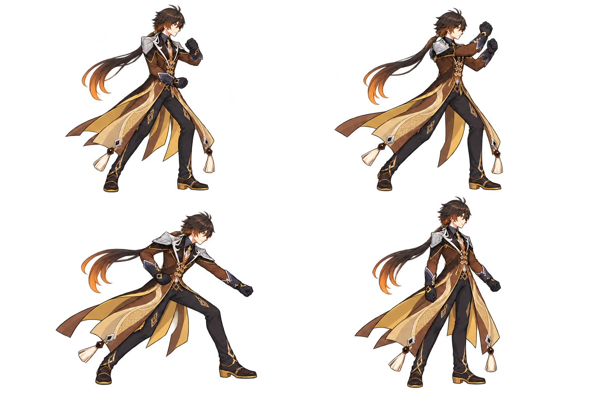
旧稿部分空手或仅枪杆；完整持枪、枪长与攻击路线待修
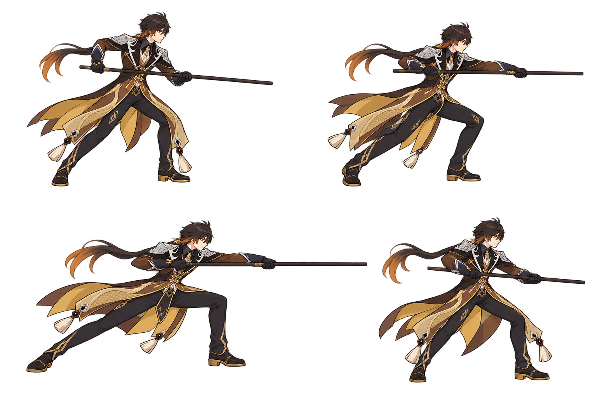
旧稿部分空手或仅枪杆；完整持枪、枪长与攻击路线待修
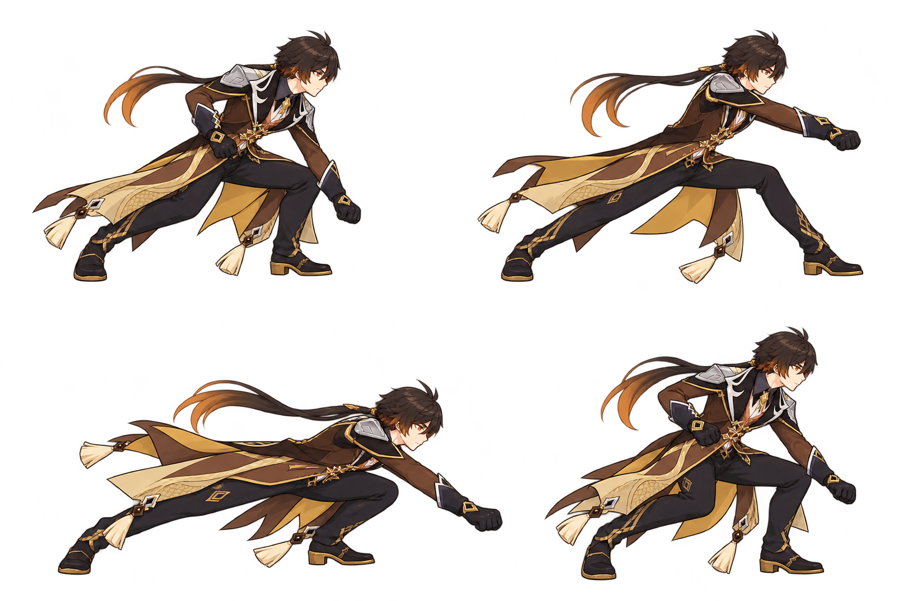
旧稿部分空手或仅枪杆；完整持枪、枪长与攻击路线待修
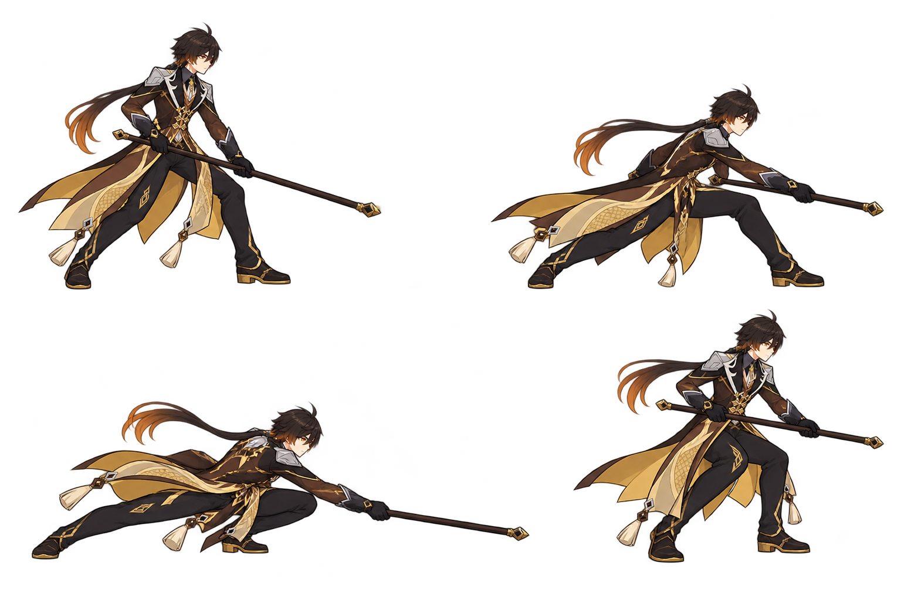
旧稿部分空手或仅枪杆；完整持枪、枪长与攻击路线待修
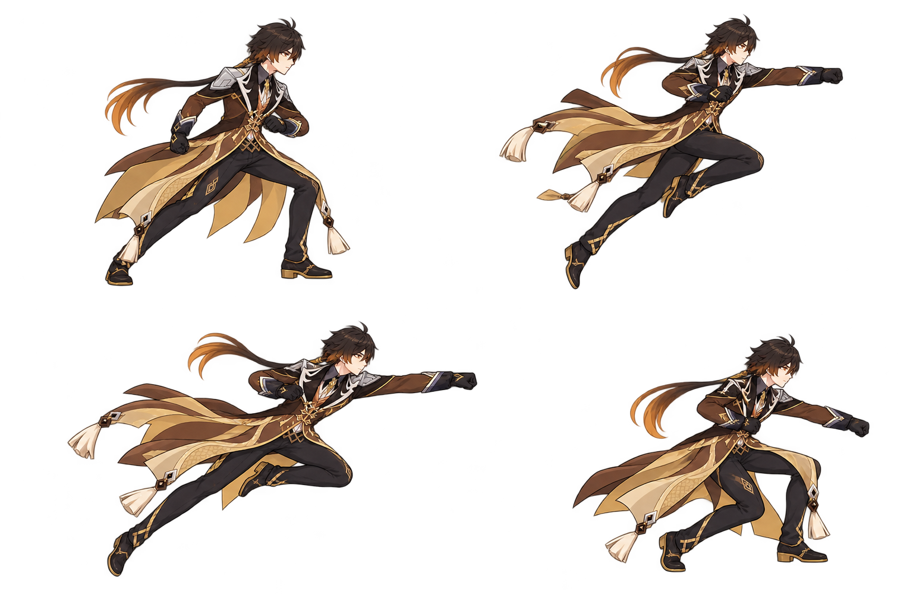
有四姿与独立岩脊；需确认掌势和释放tick
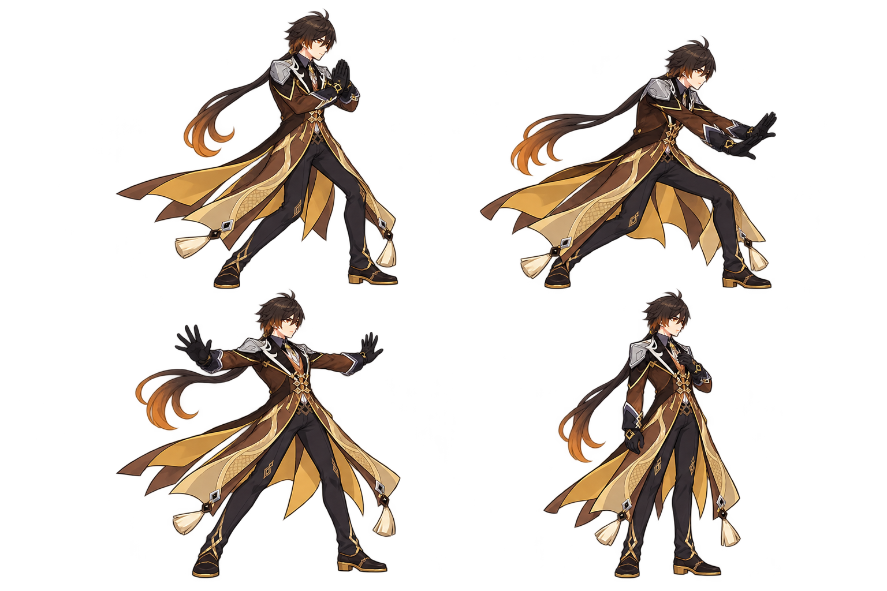